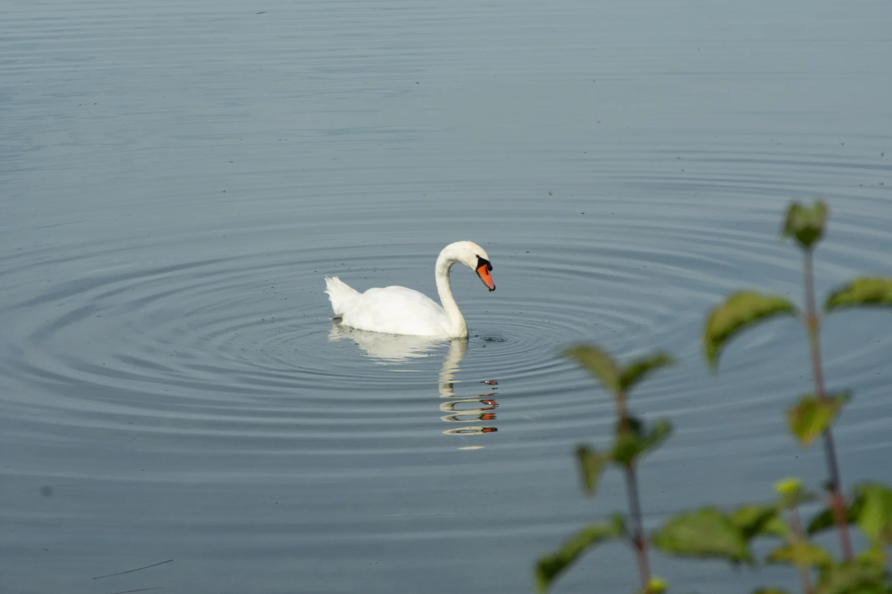

LEANDRO SINATRA — FOTOGRAFIE
Arbeiten
Projekte
01 Valle dei Templi
02 Höhlen von Vallorbe
03 Creux du Van
04 La Sauge
Mehr ansehen →
Über
Kontakt
Archiv · 100
Archiv · 100
Ein Foto pro Woche, immer Samstag oder Sonntag neu. Kein Archiv, keine Auswahl im Nachhinein — nur der eine Moment, der diese Woche geblieben ist.
100 — FOTO DER WOCHE

Datum
13.09.2026
Ort
Murtensee, Schweiz
1 / 1